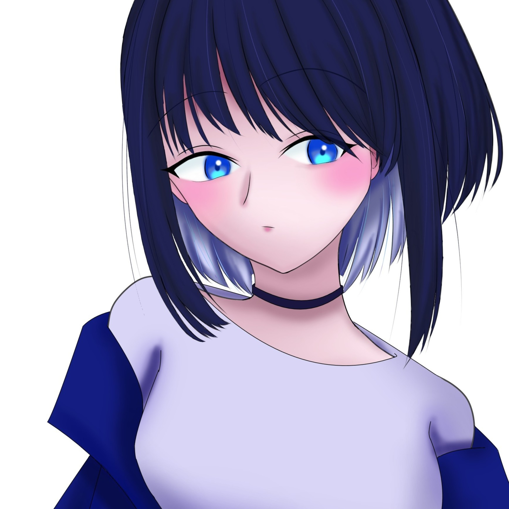

大学ではサークル代表として活動しています。人とのコミュニケーションを大切にしながら、企画運営やメンバーのサポートに取り組んでいます。周囲からは真面目だと言われることが多く、最後まで責任を持ってやり遂げることが強みです。デザインやイラストに興味があり、人の心を動かす表現について日々学んでいます。
私は、デザインやイラストを通して人の心を動かしたり、誰かの生活に彩りを与えたりできる表現を目指しています。作品を作る際は、自分の伝えたいことだけでなく、見る人がどのように感じるかを大切にしています。これからもさまざまな表現に挑戦しながら、楽しさや新しい発見を届けられるクリエイターとして成長していきたいです。
| 名前 | saki |
|---|---|
| 出身 | 青森 |
| 学校 | ZEN大学 |
| サークル | zen-bar |
| 得意 | コミュニケーション、企画・アイデア、チーム運営 |
| OS | Windows11 |
|---|---|
| Tool, MiddleWare | Github |
| 資格 | 実用英語技能検定準2級、実用数学技能検定準2級 |
作った作品
学歴
| 2022 年 | 青森県立八戸西高等学校 入学 |
|---|---|
| 2025 年 | 青森県立八戸西高等学校 卒業 |
| 2025 年 | ZEN大学 知能情報社会学部 知能情報社会学科 入学 |